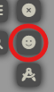
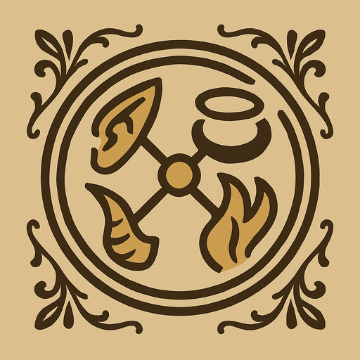
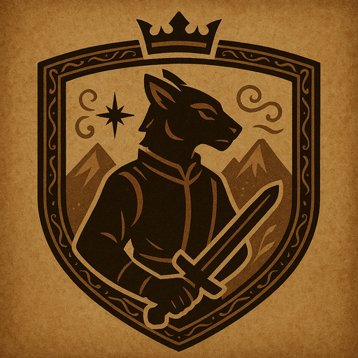
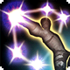

Patch 2.5 – Session 14
Patch 2.5 – Session 14
 Système
Système
 L'URL du serveur a changé en https://eottrpg.memiroa.com/. Merci à Tailos pour ses précieux conseils en la matière !
L'URL du serveur a changé en https://eottrpg.memiroa.com/. Merci à Tailos pour ses précieux conseils en la matière !- Le système de jeu a été mis à jour de la version 4.3.6 à la version 4.3.9.
- Le système d’artisanat a été refondu avec un nouveau module plus souple, permettant des fonctionnalités étendues (crafts en plusieurs étapes, échecs cumulés, etc.). Il est désormais accessible depuis un onglet dédié dans la fiche de personnage.Un tutoriel détaillant le fonctionnement de ce nouveau système est disponible ici !
- Le volet d'actions a été mis à jour.La quantité et le nombre d'utilisations des objets et aptitudes sont désormais affichés.
- L'interface BG3 a été mise à jour.Un nouveau thème, "Codex", est disponible, et est chargé par défaut. Vous pouvez le modifier depuis les paramètres de Foundry.Un autre thème, "Etrian Odyssey", plus coloré et reprenant les couleurs de l'interface des jeux, a été ajouté.Les thèmes par défaut "Gold" et "Default" sont également disponibles.Un éditeur de thème sera bientôt disponible.
- Les sessions de jeu seront désormais enregistrées à des fins d'archivage.
- Des boutons d'accès rapide au Codex ont été ajouté à l'onglet Paramètres de la barre latérale.Ils sont au nombre de 5 et permettent un accès rapide à la page d'accueil, aux règles, aux races, aux classes et aux personnages.Si besoin, d'autres raccourcis pourront être ajoutés.
- L'action "Recharge" des fusils coûte désormais une action bonus, au lieu d'une action.
- Les munitions élémentaires telles que les flèches de foudre ou balles incendiaires fonctionnent désormais comme prévu.
- Afin d'épurer l'interface de jeu, le Mini Tracker de combat a été retiré.
- De même, l'historique des 4 dernières actions utilisées a été retiré de l'ATH des Tokens.
- Les fiches des races, classes, sous-classes, des armes, des équipements, des aptitudes, des sorts, des consommables, des butins, des outils, des historiques et des installations ont été mises à jour.
- Le bouton "Coup critique" est désormais automatiquement mis en surbrillance lorsqu'un coup critique est réalisé.
- Une activité "Action Bonus" a été ajoutée aux potions. Elle est destinée aux potions utilisées depuis un Étui à potions.
- L'animation de dégâts "massifs" joue désormais lors d'un coup critique, au lieu de dépendre de la quantité de dégâts infligés.
- Les attaques manquant leur cible manquent désormais littéralement leur cible.
- Les icônes des afflictions ont été uniformisé (générées avec ChatGPT).
- Les icônes manquantes des compétences sur la fiche de personnage ont été ajoutées (générées avec ChatGPT).
- Le bouton "PopOut !" de la fiche de personnage est désormais correctement aligné avec les autres icônes.
- Les info-bulles des différents états et afflictions ont été réecrites pour se rapprocher du style du Manuel des Joueurs (2024). De plus, ces info-bulles ont été ajoutée aux différentes aptitudes et objets mentionnant des états et/ou afflictions.
- Les diverses mentions de la compétence "Performance" ont été corrigées en "Représentation".
- Suite au transfert de l'ancienne documentation vers le Codex, de nombreuses modifications de texte ont été effectuées à tous les niveaux du projet.
- L'interface Foundry a subit quelques modifications mineures, notamment au niveau de la couleur des bordures, pour se rapprocher de l'apparence du Codex.
- Suite à l'intégration de la connectivité entre Foundry et le Codex, de nombreuses images ont vu leur chemin d'accès changer. Il se peut donc que certaines images qui auraient pu être oubliées ne s'affichent pas correctement ou pas du tout.
- Un menu permettant de réaliser des emotes a été ajouté. Il se situe dans les contrôles de Token.
Races
 Général
- Les races sont désormais représentées par des icônes distinctes (générées avec ChatGPT).
 Thérian
- L'aptitude "Résilience" a été rénommée en "Volonté de fer".
Classes
 Envoûteur
Envoûteur
- L'aptitude "Échange de vie" a été renommée en "Symbiose vitale"."Échange de vie" existe déjà sur le Nécromancien.
 Impérial
Impérial
- Une activité "Recharge" a été ajoutée aux lames cinétiques. Elle coûte une action bonus et sert à représenter le changement ou rechargement de cartouche opéré par l'Impérial.
 Lansquenet
Lansquenet
- L'icône utilisée pour représenter la classe ainsi que l'aptitude "Spécialité d'arme" a été modifiée.

- L'icône utilisée pour représenter l'aptitude "Double frappe" a été modifiée.

- L'aptitude "Revigorer" a été renommée en "Revitalisation".
 Mage guerrier
Mage guerrier
- L'icône utilisée pour représenter la classe ainsi que l'aptitude "Maîtrise des lames de guerre" a été modifiée.
- L'icône utilisée pour représenter la spécialisation "Conclave des Lames de Guerre" a été modifiée.

- L'icône utilisée pour représenter la spécialisation "Conclave du Savoir de la Guerre" a été modifiée.
- L'icône utilisée pour représenter l'aptitude "Vitesse de l'élan" a été modifiée.

- L'aptitude "Effacer" a été renommée en "Effacement".
- L'aptitude "Déplacer" a été renommée en "Transfert".
 Moine
Moine
- L'aptitude "Déliement" a été renommée en "Rupture"."Déliement" existe déjà sur le Lansquenet.
 Shogun
Shogun
- L'aptitude "Frappe éclair" fonctionne désormais comme prévu.Lorsque "Frappe éclair" est actif et qu'une attaque au katana ou à l'épée est portée, le système vérifie les défenses de la cible. Les dégâts sont convertis en foudre si elle est vulnérable à la foudre, en tranchant si elle est vulnérable au tranchant. En cas de résistance ou d'immunité, les dégâts basculent vers l'autre type. Si aucune condition ne s'applique, l'utilisateur choisit entre foudre et tranchant.
 Dragoon
Dragoon
- L'icône utilisée pour représenter la classe a été modifiée.
 Troubadour
Troubadour
- L'aptitude "Chant du Pied Léger" est désormais apprise au niveau 5, au lieu du niveau 10.
- Une nouvelle aptitude, "Heurt Retentissant", a été ajoutée. Elle est apprise au niveau 10.Ces deux changements sont effectués suite à une mise à jour de la documentation mère.
- L'aptitude "Harmoniser" a été renommée en "Harmonisation".
Codex
- Ouverture du site !
- Les aptitudes sur les fiches de chacune des classes sont désormais listée par ordre d'acquisition.
Problèmes résolus
- Les effets accordant de multiples réactions par tour fonctionnent à nouveau comme prévu.
Problèmes connus
- Il se peut que la page se réactualise toute seule lors de la connexion au serveur. Cela semble être sans incidence.
- Les raccourcis pour afficher l'image d'un Token ne fonctionnent plus.
MJ
- Il est à nouveau possible de créer des "placeholders" de combattants.